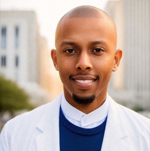
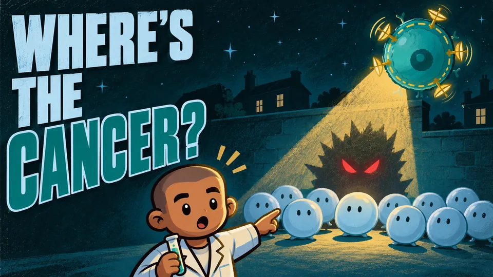
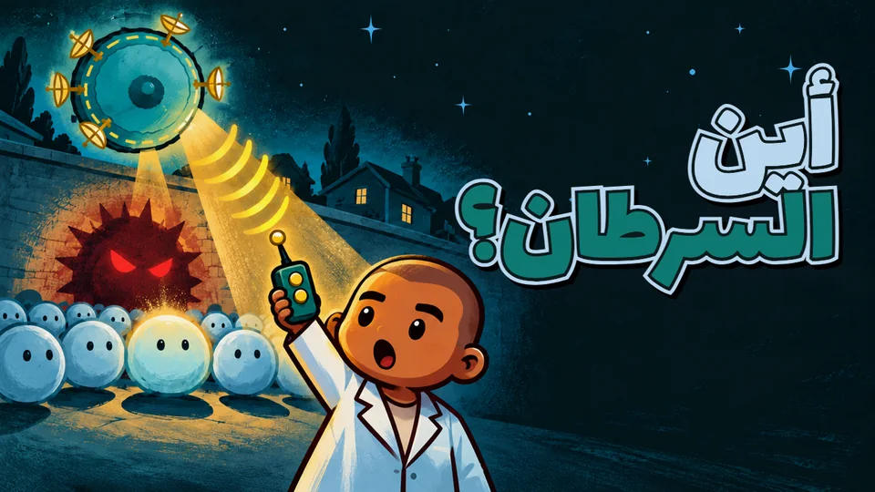
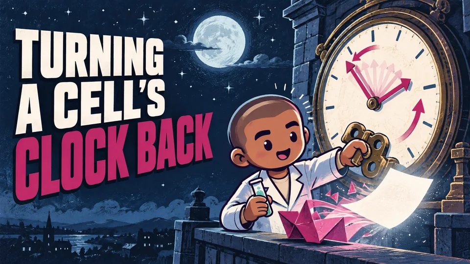
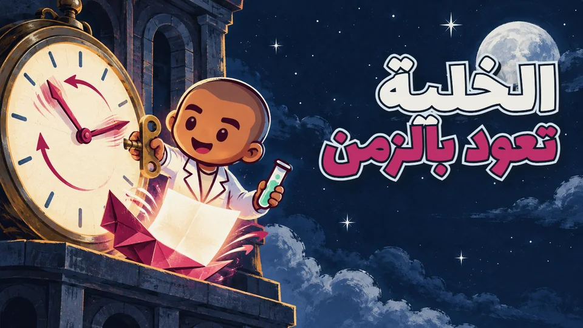
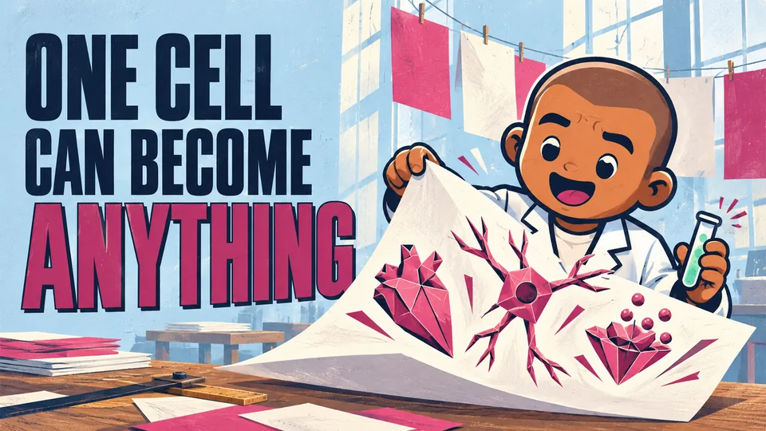
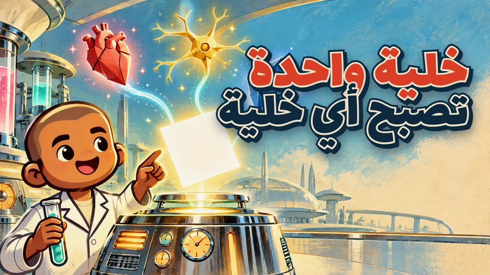
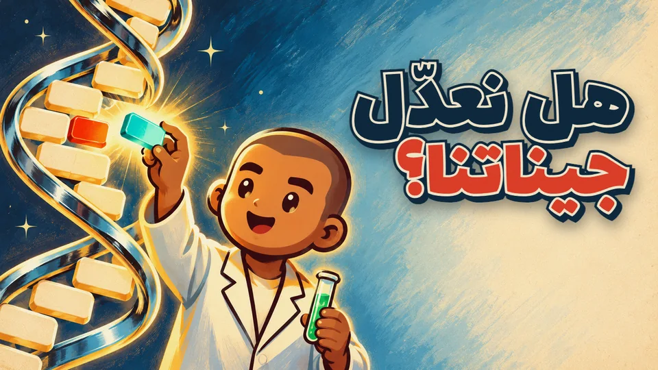
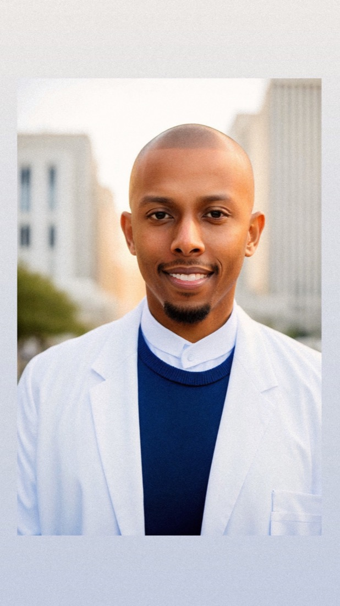

Discoveries

Episodes
Season 1
Latest


Earlier episodes
-


Episode 2 · Part 2Stem Cells -


Episode 2 · Part 1Stem Cells -


Episode 1CRISPR
Follow
Never miss a discovery
New episodes in English and Arabic.
Your host
About Mohamed

Mohamed Addani, M.S., Ph.D.
Biomedical scientist and AI researcher
Over a decade of biomedical research, from molecular biology to predictive modeling. His work spans kidney disease, pancreatic cancer, AI in healthcare and health equity.
He hosts Discoveries, reading new papers and explaining what they really show.
The science behind Addani Labs
Publications
- Health Disparities in Orthobiologics: Factors Influencing Access to Platelet-Rich Plasma for Knee Osteoarthritis 2026
- Toward Equitable Regenerative Medicine: A Health Equity Research Framework for Emerging Regenerative Treatments 2025
- An Analysis of Stem Cell Training Programs for Physicians in the US: A Mirage of Credibility 2025
- Changing the Face of Academic Medicine: An Equity Action Plan for Institutions 2022
Abstracts
Nephrology2027
Machine Learning to Predict Major Adverse Kidney Events 90 Days After Hospital Discharge
Nephrology2026
Novel Approaches Reveal Collagen Changes in Early-Stage ADPKD in Zebrafish and Mouse Models
Regenerative Medicine2025
Physicians' Views on Orthobiologics
Nephrology2024
Labeling of Denatured Collagen in ADPKD and Comparison to Fibrotic Area
Regenerative Medicine2024
Inducing Business or Improving Practice? An Analysis of Existing Stem Cell Training Programs for Physicians
Regenerative Medicine2023
Patients' Perspective on Regenerative Medicine PRP Orthobiologics
Public Health2023
Machine Learning Models Illuminate Health Disparities in Regenerative Medicine Platelet-Rich Plasma Treatment for Knee Osteoarthritis
Public Health2022
Exploring Demographic, Clinical, and Health Determinants of Health for PRP Regenerative Medicine
Regenerative Medicine2022
Towards Equitable Regenerative Medicine: A Call for Health Equity Research in Emerging Regenerative Treatments
Public Health2022
Developing Strategies to Address Health Disparities for First Generation Regenerative Medicine Treatments
Public Health2021
Developing Strategies to Address Health Disparities in Regenerative Medicine Treatments
Public Health2021
Health Disparities in PRP Regenerative Medicine Care
Nephrology2020
Collagen Changes Suggestive of a Primary Defect in pkd2+/- Adult Zebrafish Kidney
Nephrology2019
Kidney Regeneration in pkd2 Mutant Zebrafish
Nephrology2019
Development of a Transgenic Mouse for Phosphodiesterase 1A Overexpression in the Kidney
Cancer2018
Elucidating the Binding of the TGF-β/SMAD Pathway in PANC1 and HEK Cell Lines
Public Health2018
Elevated Lead Blood-Level in Children and Understanding Hazards, Exposures and Health Outcomes
Molecular Biology2018
Increases in Globular Adiponectin Will Cause the Overexpression of miRNA-155 and the Subsequent Reduction of Angiotensin Type 1 Receptors Resulting in HLHS
Chemistry2017
Investigating Mechanism: A Computational Approach to HP-RNase
Cancer2017
Effect of High Fat Diet on TGF-beta Leads to Type 2 Diabetes & Pancreatic Cancer